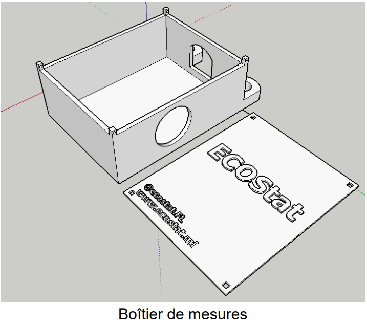
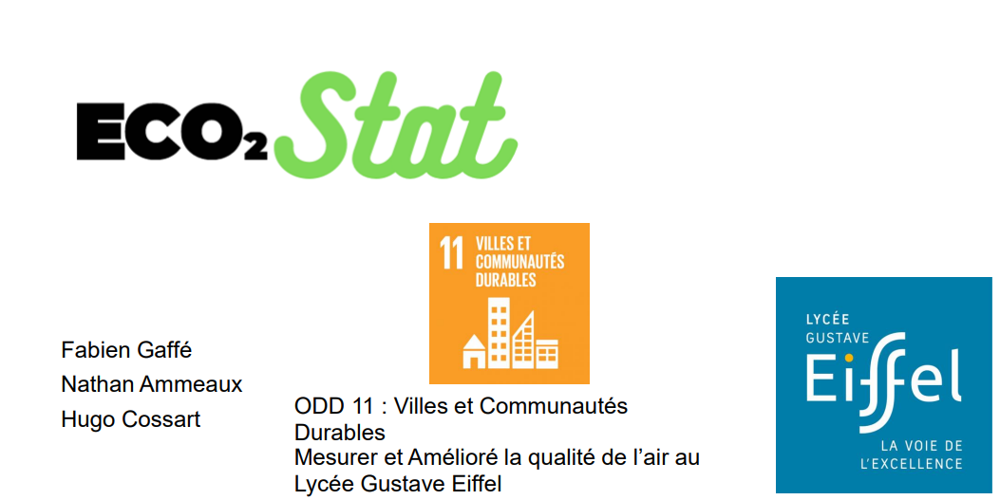
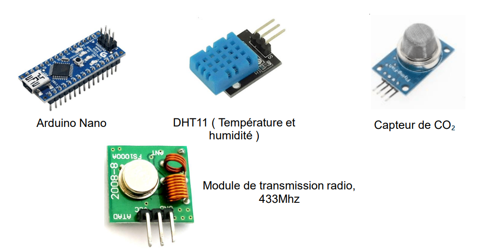

cd ..
projet 06/07
Eco²stat
Projet scolaire mêlant électronique et programmation :
Des boîtiers relevants la qualité de l’air dans plusieurs zones stratégiques du lycée (cantine, CDI, foyer, extérieur).
Les données sont centralisées et affichées sur une carte interactive avec des zones colorées, exportables pour analyses.
Zones surveillées
- Cantine
- CDI
- Foyer
- Extérieur
Fonctionnalités principales
- Collecte de données de qualité de l’air (température, humidité, CO₂, etc.)
- Transmission sans fil vers une base centrale
- Affichage des données en temps réel sur une carte interactive avec code couleur selon la qualité
- Export des données pour analyses et suivi
Technologies utilisées
- Arduino et capteurs environnementaux (DHT11, capteurs CO₂)
- Communication radio 433 MHz
- Développement web pour la carte interactive
- Impression 3D pour les boîtiers
Équipe
Hugo Cossart, Fabien Gaffé, Nathan Ammeaux
Captures d’écran


